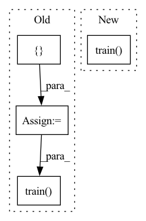

Pattern ID :19341
Before Change
sg_model.build_model("resnet50", arch_params={"num_classes": 5})
train_params = { "max_epochs": 3, "lr_updates": [1], "lr_decay_factor": 0.1, "lr_mode": "step",
"lr_warmup_epochs": 0, "initial_lr": 0.1, "loss": torch.nn.CrossEntropyLoss(),
"optimizer": "SGD",
"criterion_params": {}, "optimizer_params": {"weight_decay": 1e-4, "momentum": 0.9},
"train_metrics_list": [Accuracy()], "valid_metrics_list": [Accuracy()],
"metric_to_watch": "Accuracy",
"greater_metric_to_watch_is_better": True}
sg_model.train( train_params)
teacher_path = os.path.join(sg_model.checkpoints_dir_path, "ckpt_latest.pth")
sg_kd_model = SgModel("test_build_kd_module_with_sg_trained_teacher", device="cpu")After Change
self.assertTrue(sg_kd_model.net.module.student.linear.out_features == 5)
def test_build_kd_module_with_sg_trained_teacher(self):
self.sg_trained_teacher.train( self.train_params)
teacher_path = os.path.join(self.sg_trained_teacher.checkpoints_dir_path, "ckpt_latest.pth")
sg_kd_model = KDModel("test_build_kd_module_with_sg_trained_teacher", device="cpu")
sg_kd_model.build_model(student_architecture="resnet18",In pattern: SUPERPATTERN
Frequency: 3
Non-data size: 4
Instances Fragment ID: 63077282
Project Name: deci-ai/super-gradients
Commit Name: b37c0dcb89b9560dbfad2f7044d35b9241465677
Time: 2022-03-15
Author: shay.aharon@deci.ai
File Name: tests/unit_tests/kd_module_test.py
M Class Name: KDModuleTest
N Class Name: KDModuleTest
M Method Name: test_build_kd_module_with_sg_trained_teacher(1)
N Method Name: test_build_kd_module_with_sg_trained_teacher(1)
M Parent Class: unittest.TestCase
N Parent Class: unittest.TestCase
M File Name: tests/unit_tests/kd_module_test.py
N File Name: tests/unit_tests/kd_module_test.py
M Start Line: 26
M End Line: 52
N Start Line: 74
N End Line: 85
Before Change
)
self.train_params["loss"] = KDLogitsLoss(torch.nn.CrossEntropyLoss())
self.train_params["loss_logging_items_names"] = [ "Loss", "Task Loss", "Distillation Loss"sg_model.train( self.train_params)
// TEACHER WEIGHT"S SHOULD REMAIN THE SAME
self.assertTrue(
check_models_have_same_weights(teacher_model, sg_model.net.module.teacher))After Change
teacher_architecture=deepcopy(teacher_model),
)
kd_model.train( self.get_kd_train_params())
// TEACHER WEIGHT"S SHOULD REMAIN THE SAME
self.assertTrue(
check_models_have_same_weights(teacher_model, kd_model.net.module.teacher)) Fragment ID: 63077280
Project Name: deci-ai/super-gradients
Commit Name: 3f64529aa0cb5a9e55f75e94fd9d136341c76723
Time: 2022-03-31
Author: shay.aharon@deci.ai
File Name: tests/unit_tests/kd_model_test.py
M Class Name: KDModelTest
N Class Name: KDModelTest
M Method Name: test_train_kd_module_external_models(1)
N Method Name: test_train_kd_module_external_models(1)
M Parent Class: unittest.TestCase
N Parent Class: unittest.TestCase
M File Name: tests/unit_tests/kd_model_test.py
N File Name: tests/unit_tests/kd_model_test.py
M Start Line: 162
M End Line: 175
N Start Line: 174
N End Line: 186
Before Change
sg_model.connect_dataset_interface(self.dataset)
self.train_params["loss"] = KDLogitsLoss(torch.nn.CrossEntropyLoss())
self.train_params["loss_logging_items_names"] = [ "Loss", "Task Loss", "Distillation Loss"sg_model.train( self.train_params)
if __name__ == "__main__":
unittest.main()After Change
checkpoint_params={"teacher_checkpoint_path": teacher_path}
)
kd_model.train( self.get_kd_train_params())
if __name__ == "__main__":
unittest.main() Fragment ID: 63077281
Project Name: deci-ai/super-gradients
Commit Name: 3f64529aa0cb5a9e55f75e94fd9d136341c76723
Time: 2022-03-31
Author: shay.aharon@deci.ai
File Name: tests/unit_tests/kd_model_test.py
M Class Name: KDModelTest
N Class Name: KDModelTest
M Method Name: test_train_kd_module_pretrained_ckpt(1)
N Method Name: test_train_kd_module_pretrained_ckpt(1)
M Parent Class: unittest.TestCase
N Parent Class: unittest.TestCase
M File Name: tests/unit_tests/kd_model_test.py
N File Name: tests/unit_tests/kd_model_test.py
M Start Line: 186
M End Line: 201
N Start Line: 197
N End Line: 212